Plataforma de telemedicina para clínicas e médicos: agenda, teleconsulta, prontuário eletrônico, documentos com assinatura digital ICP-Brasil, pagamento e conformidade com a LGPD.
Para quem vai usar, testar, implantar e publicar a plataforma.
A plataforma atende várias clínicas na mesma instalação, cada uma isolada das outras (agenda, equipe e prontuários não se misturam; o isolamento é garantido pelo próprio banco de dados). Uma mesma pessoa pode ter papéis diferentes em clínicas diferentes, e até mais de um papel na mesma clínica (por exemplo, a médica dona do consultório é médica e administração).
| Papel | O que faz | O que NÃO vê |
|---|---|---|
| Paciente | Marca consulta, paga, entra no pronto atendimento, faz a teleconsulta, vê o próprio prontuário (Minha saúde), envia exames, baixa documentos, exerce direitos da LGPD. | Dados de outros pacientes. |
| Médico(a) | Define horários, atende por vídeo, escreve o prontuário (SOAP), mantém a ficha clínica e sinais vitais, emite e assina receitas, atestados e pedidos de exame, faz plantão. | Prontuário de quem nunca atendeu na clínica. |
| Recepção | Marca consultas para pacientes, acompanha a agenda da clínica e a fila. | Prontuário e dados clínicos (LGPD, art. 6º, III). |
| Administração | Abre a clínica, convida a equipe, verifica o CRM dos médicos, define valores, vê indicadores e responde pedidos LGPD. | Prontuário e dados clínicos. |
Pré-requisitos: Node.js 22+, pnpm 10 (npm install -g pnpm@10.15.0) e os arquivos apps/api/.env e apps/web/.env.local preenchidos (cada linha do .env.example explica onde pegar o valor).
O comando pnpm demo:criar monta a Clínica Demonstração passando pelas mesmas regras de um uso real (convites, conferência de CRM, abertura da clínica, marcação de consultas, prontuário e receita). Pode ser rodado de novo sem duplicar nada.
| Papel | Nome | |
|---|---|---|
| Administração | Ana Paula Souza | demo.admin@exemplo.com |
| Médico | Carlos Eduardo Mendes (CRM 123456-SP) | demo.medico@exemplo.com |
| Recepção | Juliana Lima Rocha | demo.recepcao@exemplo.com |
| Paciente | Maria Fernanda Oliveira (com 6 meses de sinais vitais e ficha) | demo.paciente@exemplo.com |
| Paciente | João Pedro Almeida | demo.paciente2@exemplo.com |
Quem abre o endereço da plataforma sem estar conectado vê primeiro a capa: apresentação, recursos, como funciona e segurança. De lá a pessoa escolhe Começar agora (cadastro), Já tenho conta (login) ou Validar documento. Quem já está conectado vai direto para as suas clínicas.
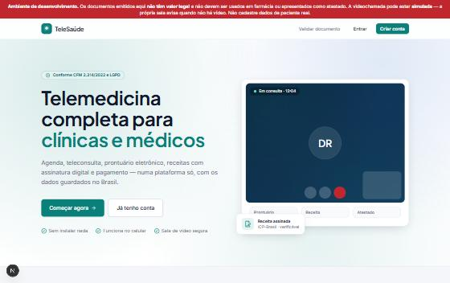
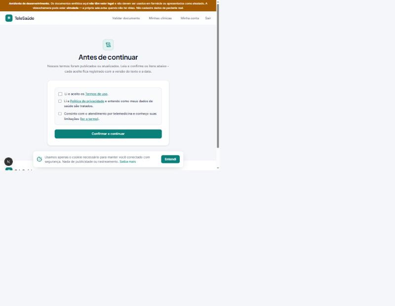
As telas do paciente funcionam no celular e no computador. As imagens abaixo estão no formato de celular.
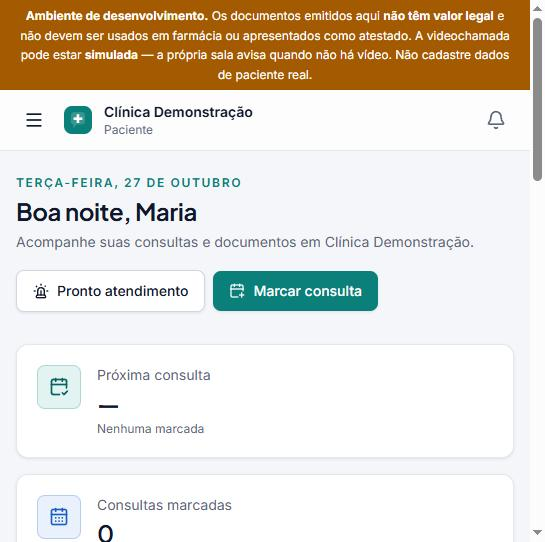
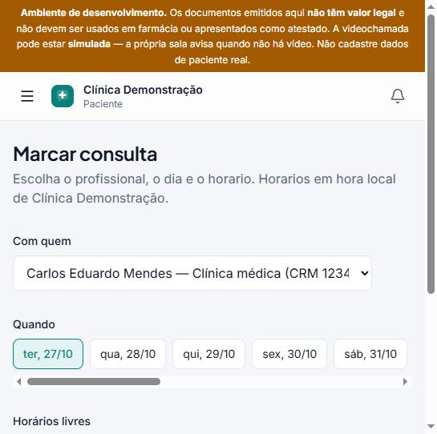
A clínica divulga um link do tipo /entrar-na-clinica/clinica-demo (site, QR Code, WhatsApp). O paciente cria a conta (ou entra) e passa a ser paciente daquela clínica.
Na Agenda, o botão Entrar na consulta aparece perto do horário. O navegador pede câmera e microfone. A sala é exclusiva dos dois e não é gravada.
Sem agendamento: o paciente descreve o que sente, aceita o termo, paga (se houver valor) e entra na fila. A tela mostra a posição e a estimativa de espera, e leva o paciente para a sala quando um médico de plantão o chama. Há um alerta claro para emergências (SAMU 192).
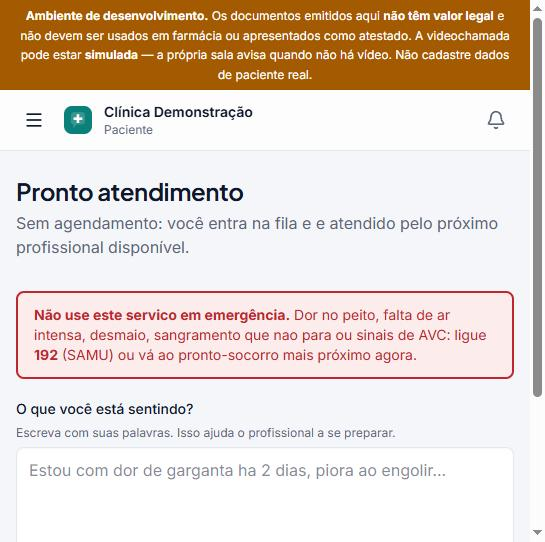
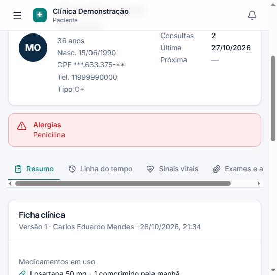
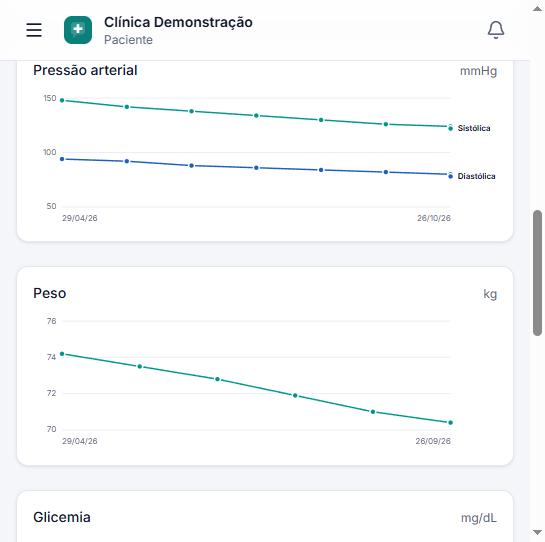
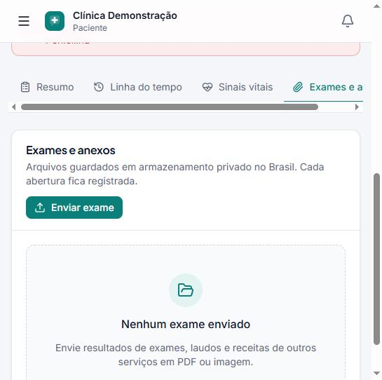
Receitas, atestados e pedidos de exame aparecem em Documentos. Depois que o médico assina, o paciente baixa o PDF assinado. Cada documento tem um código de validação que a farmácia confere em /validar.
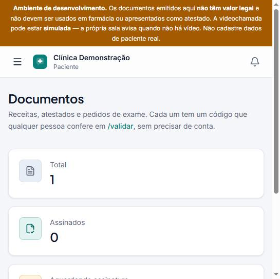
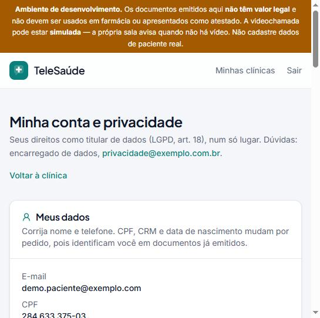
Pelo link Minha conta (no menu ou no topo), qualquer pessoa: corrige nome e telefone; baixa uma cópia de todos os seus dados (JSON); vê quem acessou seu prontuário e quando; vê e revoga consentimentos; e faz pedidos ao encarregado de dados, com prazo de 15 dias. Detalhes na seção 9.
Em Meus horários, monte a semana: dia, início, fim e duração da consulta. Os horários livres que o paciente vê são calculados a partir daqui, menos o que já está marcado e os bloqueios.
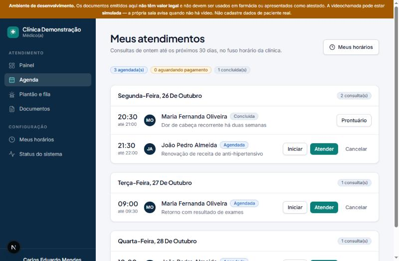
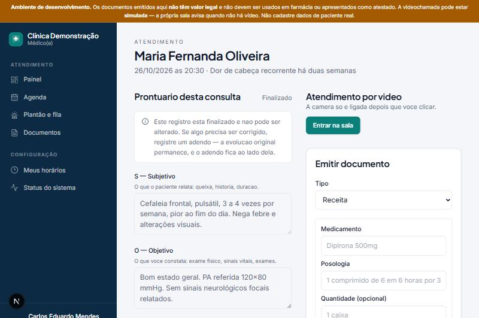
Em Documentos, cada documento emitido mostra dois caminhos:
| Caminho | Como funciona |
|---|---|
| Assinar com certificado em nuvem | CPF do titular + código de 6 dígitos do aplicativo do certificado (integração BirdID). A plataforma envia ao provedor só o resumo criptográfico do documento. No ambiente de testes, o código é 000000. |
| Assinar fora da plataforma | 1) Baixe o PDF; 2) assine no programa que você já usa (VIDaaS, BirdID, SafeID, Assinador do ITI, leitor de PDF com token A3), sem editar; 3) envie o PDF assinado. A plataforma confere que a assinatura é válida, que nada foi acrescentado depois, que o arquivo é este documento e que o certificado é do médico. Se algo não confere, recusa e explica o motivo. |
Em Pacientes (filtro “Meus pacientes” ou “Todos da clínica”) ou pelo botão Prontuário completo do atendimento: cabeçalho com idade, CPF mascarado, contato e alerta de alergia, e as abas Resumo, Linha do tempo, Evoluções, Sinais vitais e Exames. A ficha clínica “muda” ganhando uma versão nova; a anterior fica guardada. Toda leitura fica registrada na auditoria e aparece para o paciente.
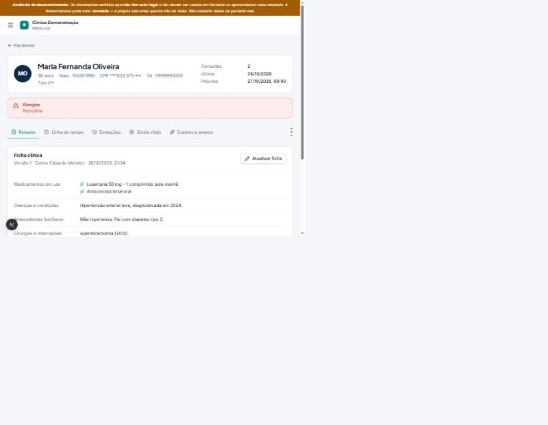
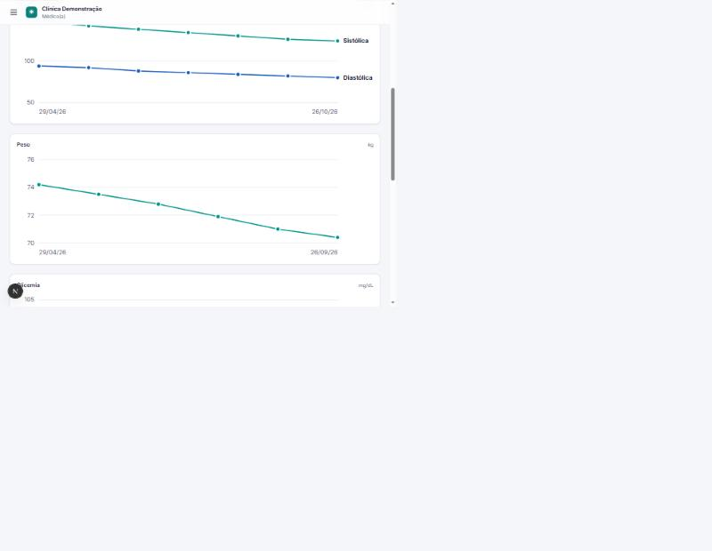
Em Plantão e fila: Entrar de plantão agora (6 horas), depois Chamar o próximo. A fila respeita a prioridade e a ordem de chegada, e dois médicos nunca chamam o mesmo paciente. Encerrar o plantão é recusado se houver atendimento em curso.
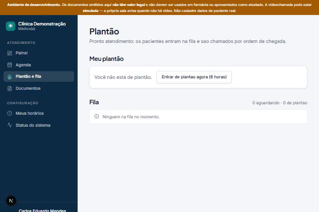
O sino (no topo do menu ou do celular) mostra consultas marcadas e canceladas, lembretes, documentos assinados, CRM verificado e respostas a pedidos LGPD. Clicar leva ao lugar certo e marca como lida.
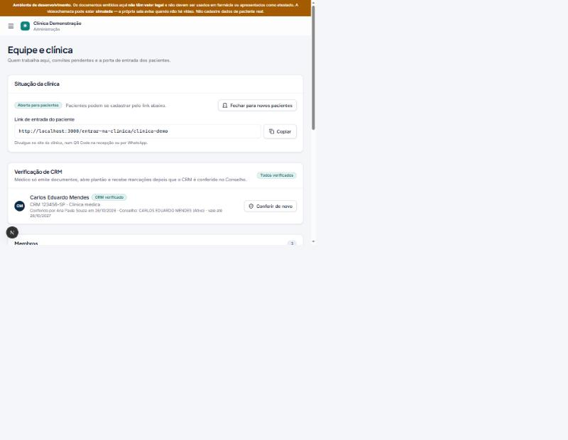
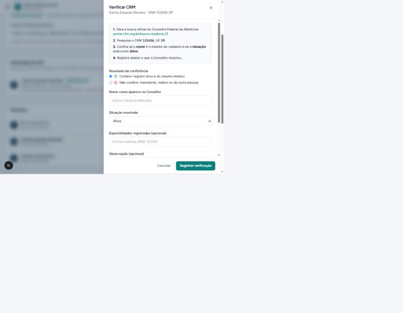
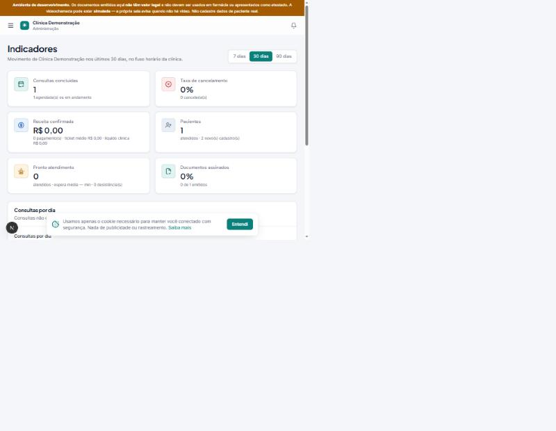
Qualquer pessoa (farmácia, RH, laboratório) abre /validar, digita o código impresso no rodapé do documento e vê se ele é autêntico: tipo, número, data, médico com CRM, clínica e as iniciais do paciente. O conteúdo clínico nunca aparece. Para o PDF assinado em mãos, a página leva ao validador oficial do ITI (validar.iti.gov.br), que confere a assinatura ICP-Brasil.
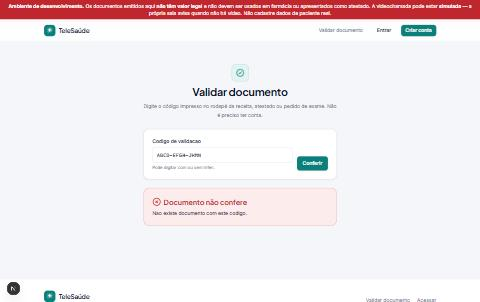
| Exigência | Como a plataforma atende |
|---|---|
| Dado de saúde no Brasil | Banco, autenticação e arquivos na região São Paulo. |
| Necessidade (art. 6º, III) | Recepção e administração não leem prontuário; o médico só lê de quem atende na clínica. |
| Consentimento provado (art. 8º) | Aceite por versão do texto, com data, IP e navegador; revogação registrada; nova versão pede novo aceite. |
| Transparência (art. 9º) | Política de privacidade (/privacidade), termos com o termo de telemedicina (/termos) e “Quem acessou meus dados”. |
| Direitos do titular (art. 18) | Correção, cópia completa em JSON (acesso e portabilidade), revogação e pedidos com prazo de 15 dias (art. 19). |
| Segurança (art. 46) | Isolamento por clínica no banco, criptografia, registros imutáveis, auditoria somente inserção, links temporários para arquivos. |
| Encarregado (art. 41) | Nome e e-mail configuráveis, no rodapé, na política e na área do titular. |
| Cookies | Só o cookie de sessão (necessário). O aviso informa; não há rastreamento. |
Faça na ordem, com a clínica de demonstração. Cada linha diz o que fazer e o que deve acontecer.
| Ação | Resultado esperado | |
|---|---|---|
| ☐ | Abra localhost:3000 desconectado. | Aparece a capa, não o login. |
| ☐ | Crie uma conta nova e tente salvar o perfil sem marcar os aceites. | Mensagem pedindo os três aceites. |
| ☐ | Em Minha conta, clique em “Baixar meus dados”. | Baixa um arquivo JSON com cadastro e consentimentos. |
| ☐ | Revogue o consentimento de telemedicina e entre numa clínica. | A tela “Antes de continuar” pede o aceite de novo. |
| Ação | Resultado esperado | |
|---|---|---|
| ☐ | Marque uma consulta para amanhã. | Aparece na agenda; o sino mostra “Consulta marcada”. |
| ☐ | Minha saúde → Sinais vitais: registre pressão 80 × 120. | Recusa: “A sistólica precisa ser maior que a diastólica.” |
| ☐ | Registre 124 × 80. | Entra no gráfico e na tabela como “Paciente”. |
| ☐ | Exames → envie um PDF de teste. | Aparece na lista; “Abrir” baixa o arquivo. |
| ☐ | Cancele a consulta marcada (com motivo). | O médico recebe “Consulta cancelada” no sino. |
| Ação | Resultado esperado | |
|---|---|---|
| ☐ | Agenda → Atender a consulta de Maria. | Mostra alergia (Penicilina), remédios e sinais vitais no topo. |
| ☐ | Escreva a evolução SOAP e finalize. | Fica somente leitura; só é possível registrar adendo. |
| ☐ | Emita uma receita e assine na nuvem (CPF do cadastro + código 000000). | Status “Assinado digitalmente”; a paciente recebe aviso e baixa o PDF. |
| ☐ | Emita outra receita, baixe o PDF e envie o mesmo PDF sem assinatura. | Recusado com explicação. |
| ☐ | Pacientes → abra João (sem consulta com você ainda, se for o caso). | Sem consulta: “Dados clínicos protegidos”. |
| ☐ | Plantão: entre de plantão e chame o próximo da fila. | O paciente da fila é levado à sala. |
| Ação | Resultado esperado | |
|---|---|---|
| ☐ | Equipe → convide um médico com um e-mail novo; aceite o convite com essa conta. | O médico aparece com CRM “Aguardando verificação” e o aviso no topo das telas dele. |
| ☐ | Como o novo médico, tente emitir documento ou abrir plantão. | Bloqueado: “CRM aguardando verificação”. |
| ☐ | Verifique o CRM com situação “Inativo”. | Recusado: só se verifica CRM ativo. |
| ☐ | Verifique com “Ativo”. | Médico liberado; ele recebe aviso; o paciente passa a vê-lo em Marcar consulta. |
| ☐ | Pacientes → abra Maria. | Só cadastro: “Dados clínicos protegidos”. |
| ☐ | Indicadores → troque entre 7, 30 e 90 dias. | Números e gráfico do período. |
| ☐ | Como paciente, faça um pedido LGPD para a clínica; como admin, responda “Concluir” sem texto e depois com texto. | Sem texto: recusado; com texto: o paciente vê a resposta e recebe aviso. |
| Ação | Resultado esperado | |
|---|---|---|
| ☐ | Copie o código de um documento e abra /validar em janela anônima. | “Documento autêntico”, só com iniciais do paciente. |
| ☐ | Digite um código inventado. | “Documento não confere”. |
| ☐ | Abra o site no celular (ou reduza a janela). | Menu vira gaveta (☰), sem rolagem lateral. |
| Comando | O que verifica |
|---|---|
| pnpm typecheck | Tipos dos 4 pacotes. |
| pnpm test | Testes de unidade (regras de agenda, assinatura, LGPD, CRM, PDF, operação). |
| pnpm test:banco | 137 testes da API contra o Postgres de verdade: acesso ao prontuário por papel, imutabilidade, CRM, assinatura externa ponta a ponta, LGPD, notificações (inclusive duas instâncias ao mesmo tempo) e indicadores. Criam e apagam os próprios dados. |
| pnpm db:verificar-rls | Segurança por linha ligada em todas as tabelas e políticas no lugar. |
No GitHub, o arquivo .github/workflows/ci.yml roda tipos, testes e as compilações de produção a cada envio. Os testes de banco rodam se o segredo DATABASE_URL_TESTE (um projeto Supabase só para testes) estiver configurado.
Sem nenhum serviço pago, a plataforma funciona inteira em modo de teste. Para valer de verdade, contrate e configure:
| Recurso | Serviço | Como configurar (API: apps/api/.env) |
|---|---|---|
| Videochamada | Daily (plano gratuito para testar) | VIDEO_PROVEDOR=daily e VIDEO_API_KEY (painel do Daily → Developers). |
| Assinatura integrada | BirdID (homologação, depois produção) | ASSINATURA_PROVEDOR=birdid, ASSINATURA_URL, _CLIENT_ID, _CLIENT_SECRET e CHAVE_CRIPTOGRAFIA. A assinatura externa funciona sem contrato. |
| Pagamento | Mercado Pago (split) | Ver seção 6 do .env.example (URL_PUBLICA_API, PAGAMENTO_WEBHOOK_SEGREDO). |
| E-mails | Resend (plano gratuito) | EMAIL_PROVEDOR=resend, EMAIL_API_KEY, EMAIL_REMETENTE com domínio verificado. |
| CRM automático | Webservice do CFM (pago) ou fornecedor | Opcional. Sem ele, a conferência manual pela administração já atende. |
NEXT_PUBLIC_NOME_PLATAFORMA, NEXT_PUBLIC_EMPRESA_RAZAO_SOCIAL, _CNPJ, _ENDERECO, NEXT_PUBLIC_ENCARREGADO_NOME e _EMAIL. Sem eles, os textos legais mostram “[a preencher]”.
A API não guarda estado e pode rodar em várias cópias. Ajuste DB_POOL_MAX (conexões por cópia) e use o Transaction pooler do Supabase (porta 6543) quando houver várias cópias. Use /pronto como verificação de saúde. Detalhes em docs/adr-0020-escala-e-operacao.md.
| Sintoma | O que fazer |
|---|---|
| “Serviço temporariamente indisponível” ou “A API não respondeu”. | A API está rodando? (pnpm dev). Em produção: confira ORIGEM_PERMITIDA na API (CORS) e se o plano gratuito do Render “dormiu” (a primeira chamada demora). |
| Login falha com “Invalid API key”. | A chave em NEXT_PUBLIC_SUPABASE_PUBLISHABLE_KEY deve começar com sb_publishable_ (cuidado com caracteres cortados ao colar). |
| Médico não aparece em Marcar consulta. | O CRM dele precisa estar verificado nesta clínica (Equipe → Verificação de CRM) e ele precisa ter horários cadastrados. |
| Paciente não consegue entrar pelo link da clínica. | A clínica está “em implantação”: Equipe → Abrir clínica. |
| Erro de conexão com o banco (ENOTFOUND). | Use a conexão do Session/Transaction pooler (termina em pooler.supabase.com), não a direta (db.xxx.supabase.co, só IPv6). |
| Testes de banco falhando em paralelo. | Use pnpm test:banco, que roda um arquivo por vez (limite de conexões do pooler). |
| Assinatura externa recusada. | Envie exatamente o PDF baixado da plataforma, assinado e sem edição, com o seu certificado (CPF do cadastro). |
| Sala de vídeo sem imagem. | Em teste (local_teste) é esperado. Com Daily: permita câmera e microfone no navegador. |
pnpm install # dependências pnpm verificar # confere apps/api/.env e apps/web/.env.local pnpm db:migrar # cria/atualiza as tabelas pnpm db:verificar-rls # segurança por linha pnpm dev # site :3000 e API :3333 pnpm demo:criar # clínica de demonstração (acessos em demo-acessos.local.md) pnpm typecheck # tipos pnpm test # testes de unidade pnpm test:banco # testes contra o Postgres pnpm --filter @tele/api build # API para produção (apps/api/dist) pnpm --filter web build # site para produção
Decisões técnicas registradas em docs/adr-0001 a docs/adr-0020. Rotas da API e telas: README.md.